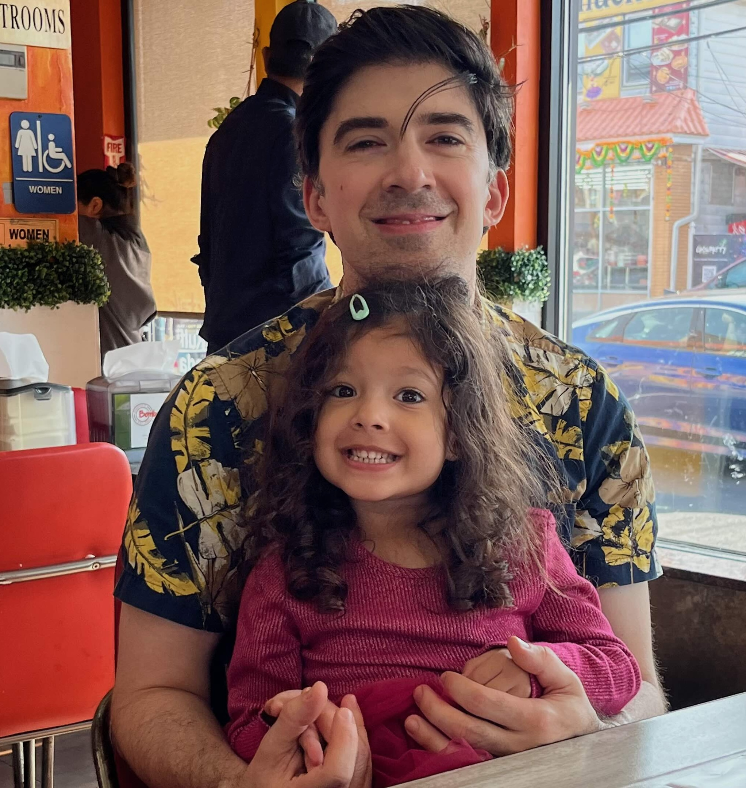
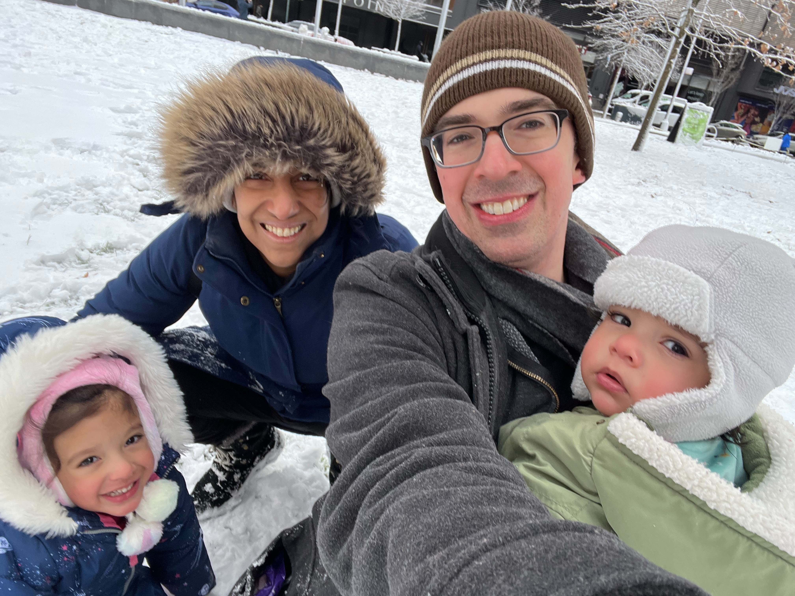
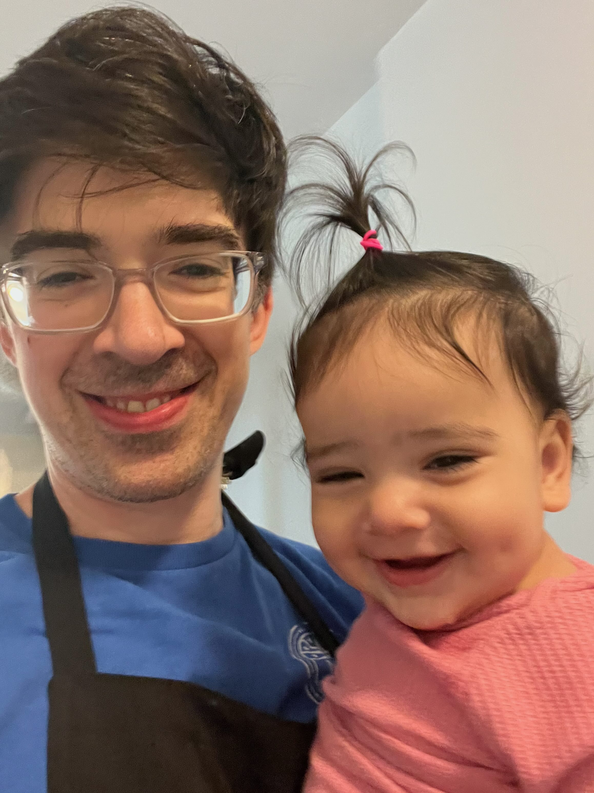

One path through the forest
I came at Sanskrit through personal interests midway through college. Buddhist meditation and books like the Bhagavad Gita got me curious about the languages and knowledge systems behind them. I was officially studying Environmental Science and Public Policy, but my elective classes, including one on Madhyamaka philosophy, ultimately proved to be more interesting. After college, at the end of a long trip of soul-searching by bicycle, I settled in Ithaca, NY, took a part-time job as a cashier at an organic food co-op, and started auditing Sanskrit classes at Cornell.
I would say within weeks, I was so taken by Sanskrit, I knew I wanted to share it with others. I was skeptical about returning officially to academia, but I wanted a rigorous education in the subject, so, within a few years, I took the plunge again, back into Harvard. It was... not great for me. On the one hand, I loved all the language courses I was able to take. My home library today creaks under the weight of those years. And as I dreamed I might, I loved teaching Sanskrit to students. But the research side of things turned out to be miserable for me. I cared about teaching and the materials of pedagogy, including dictionaries and grammars. Aside from those, the traditional research output I most wanted to produce, if anything, was a new edition of a text and/or a new translation. Even better, I thought it would be exciting to create a new digital resource (I had really liked computer programming once upon a time as a high schooler). At Harvard, though, I was steered toward topics that were more theoretical and thereby strategically better for getting an academic job in the States. It didn't feel right for me. And when I let myself learn a bit of Python and really liked it, it confirmed my suspicion: I was simply in the wrong place at the wrong time.
With the help of a couple of lucky clues from the universe, I made a big jump from Massachusetts to Germany. After a transitional year or so, including a semester studying Indo-European in Munich, I found a good opportunity to start a new Sanskrit PhD, complete with half-time employment as part of a digital philology project team, in Leipzig. It was exactly the change I needed. This team of senior Sanskritists patiently welcomed me to the seminar table as a respected colleague, appreciated my contributions, and motivated me to level up my computer skills across the board. Plus, a vibrant and diverse group of digital-humanities scholars were camped out in Leipzig for those same years, trading techniques and inspiration across pre-modern language domains as different as Greek, Hebrew, Persian, Chinese, and more. I was the oddball Sanskritist in the group, and it felt great.
With ample freedom to steer my doctoral research, I pursued a peculiar combination of not only Sanskrit philology and philosophy — culminating in a critical edition, translation, and analysis of a part of the 10th-century Nyayabhusana — but also digital humanities. Specifically, I came up with a corpus-based system (Pramāṇa NLP and Vātāyana) that reveals intertextual connections between Sanskrit philosophy texts relevant to my philology work. It may not be the most technically sophisticated project out there, but it motivated me to educate myself, and it helped me to finally experience what it's like to do research that feels authentic, concrete, and exciting to share with the academic community.
That's still what I'm after. Post-PhD, I'm a father of two, and after a gap of a few years working as a software engineer, I'm slowly making my way back into the field of Sanskrit studies. When I have downtime, I've continued always thinking about Sanskrit, and philosophy, and philology, and the role digital tools have to play. Even when I sit down to meditate, it's inevitably where my mind goes. After years of thinking that this makes me "not a good meditator" anymore, at some point I realized: My complex relationship with digital Sanskrit philology is part of my practice. And all things considered, it's a beautiful thing. So, I'm here to share that. For those who want Sanskrit language study to be a part of their own journey, I think knowing a thing or two about digital resources is a good thing, and I'm happy to be here talking about it.
If any part of this mission speaks to you, I hope you'll stay tuned and be in touch!
Highlighted Digital Sanskrit Projects
- Pramāṇa NLP (2019 paper)
- Vātāyana (2022 dissertation)
- Skrutable (2023 paper)
- Pāṇḍitya & SETI (2025 paper)
Traditional Indology Projects
- Nyayabhusana 104-154 edition, translation, and study (2022 dissertation)
- Academic Editing: Eli Franco's 2023 Felicitation volume
The bigger picture
I wrote the story above to help explain the perspective of my digital Sanskrit work. But in fact, that path was often dark and obscure. If you're maybe experiencing similar doubts in your own life about how to balance academics, vocation, and the life of the mind, I want to briefly share with you how other parts of my own life and self have helped sustain me so far. I obviously don't have any easy answers to give, but at least we can know that we're struggling through these things together.
I grew up in Southern New Jersey for my entire childhood. My parents, Otis and RoseAnne, are also from the South Jersey/Philly area, and we lived fairly comfortable, middle-to-upper-middle class lives. I did well in my public schooling, and my parents supported me in spending the rest of my personal time with part-time jobs, sports, and hanging out with friends (although video games probably consumed more time than all those combined). Academics at an advanced level wasn't something we understood well or particularly aspired to, but we still thought I should aim high. So, with some encouragement (and with the hope of significant financial aid), I dared to apply to a big-name school or two. With no small bit of luck, Harvard accepted me, and I went, and then my world got a lot bigger.
I had always been an avid learner, but in college, I suddenly felt like an imposter. My peers seemed much more acquainted with the ways of academia, and I felt like a silly amateur when it came to "Research with the capital R", as it loomed in my imagination. Within my chosen major of environmental science, I felt unsuccessful and unmoored. So, I found other things on the side that felt more like me: cleaning dishes at the Dudley Co-op and bathrooms as part of Dorm Crew; caring for animals at a psychology lab; working as a mechanic at the bike shop; taking two semesters off to read books; and meditating a lot at the Cambridge Insight Meditation Center. These things grounded me, and though I didn't graduate with honors or anything like that, I emerged from college with an even deeper love of learning than ever before.
Within a few months of graduating, I started my Sanskrit journey. The path was filled with many experiences, both good and bad. Grad school actually made me quite depressed for the first few years, until I eventually had to quit my first PhD program. To be honest, it was a dark time. But I'm happy to talk about it now, because out of that darkness came light. I got acquainted with therapy (thank you, Bureau of Study Counsel), and I was forced to look around for a better place for my next phase. That turned out to be Europe because 1) the academic trends suited me better, 2) I had always wanted to live abroad for a while, and 3) it got me closer to my friend Saee, who yes, it turns out, was in fact the love of my life, and who supports my intellectual and personal goals better than anyone else ever could. For example, without her enthusiasm for neuroscience, math, and machine learning, I don't think I would have ended up at such a fun hybrid of traditional and digital Sanskrit research on my own. And if not for her wit, good humor, and passionate curiosity about so many things, I'm not sure what my life would be. Our little daughters, too, for their own parts, are also shaping up to be very interesting conversation partners.
Which is all to say, Sanskrit and meditation and academic work are all well and good, but there's also more to be thankful for.





